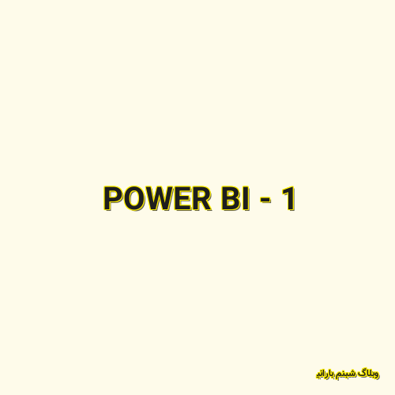

✖

POWER BI - 1
چرا پاور بیآی؟ شبنم در این پست به برتریهای بستر هوش تجاری مایکروسافت پرداخته است.
وبلاگ شبنم بارانی 2020-06-03 13:21:00 مطالعه پست گزارش خرابی لینک / محتوای مجرمانه / تغییر محتویات لینک